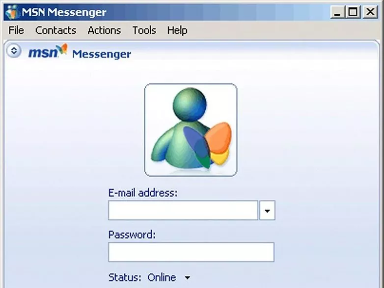

What are computers?
Computers are machines that perform tasks or calculations according to a set of instructions, or programs. The first fully electronic computers, introduced in the 1940s, were huge machines that required teams of people to operate. Compared to those early machines, today’s computers are amazing. Not only they are thousands of times faster, they can fit on your desk, in your lap, or even in your pocket.
What can you do with computers?
In the workplace, many people use computers to keep records, analyze data, do research, and manage projects. At home, you can use computers to find information, store pictures and music, track finances, play games, and communicate with others.
The web
The World Wide Web (usually called the Web, or web) is a gigantic storehouse of information. The web is the most popular part of the internet, partly because it displays most information in a visually appealing format.
Email (short for electronic mail) is a convenient way to communicate with others. When you send an email message, it arrives almost instantly in the recipients email inbox. You can send email to many people simultaneously, and you can save, print, and forward email to others.
Instant messaging
Instant messaging is like having a real-time conversation with another person or a group of people. When you type and send an instant message, the message is immediately visible to all participants. Unlike email, all participants have to be on-line (connected to the internet) and in front of their computers at the same time. Communicating by means of instant messaging is called chatting.
Pictures, music and movies
If you have a digital camera, you can move your pictures from the camera to your computer. Then you can print them, create slide shows, or share them with others by email or by posting them on a website. You can also listen to music on your computer, either by importing (transferring to your computer) music from audio CDs or by purchasing songs from a music website.
Gaming
Do you like to play games? Thousands of computer games in every conceivable category are available to entertain you. Get behind the wheel of a race car, battle frightening creatures in a dungeon, or control civilizations and empires! Many games allow you to compete with other players around the world through the Internet. Windows includes a variety of card games, puzzle games, and strategy games.